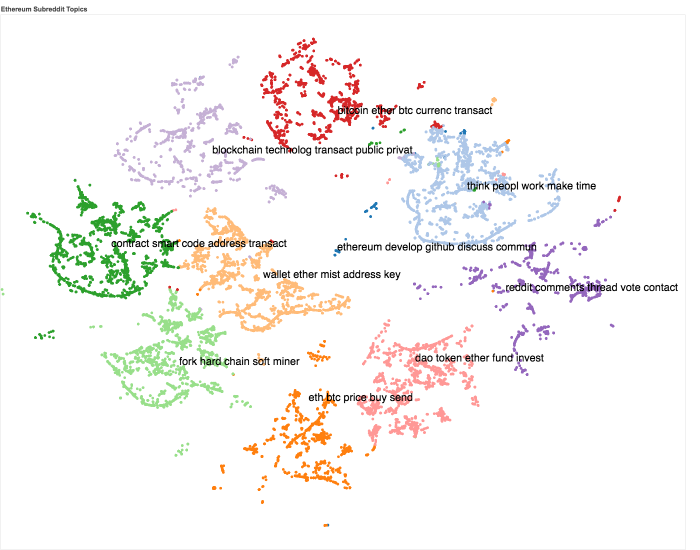
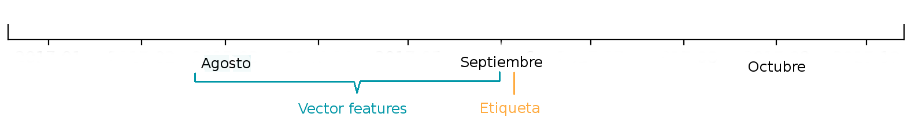
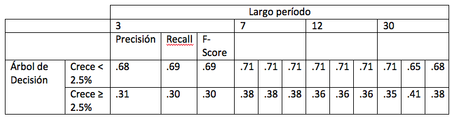
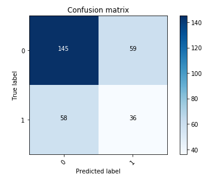
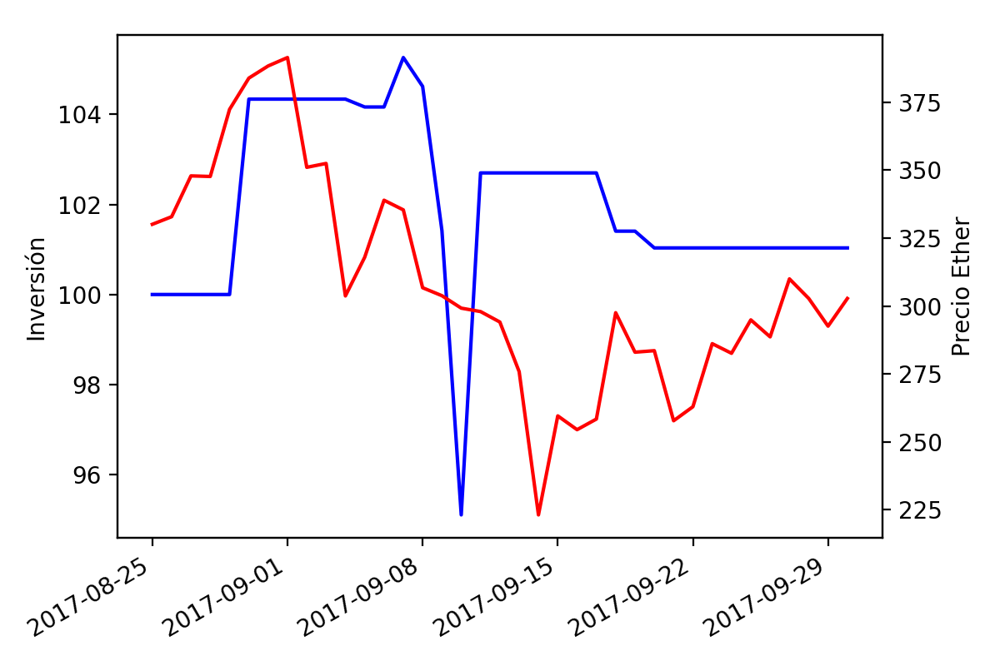

Un intento de trading bot
IIC2433 - Minería de Datos
Prof. Belén Saldías
En este proyecto analizamos el impacto de las noticias en el precio del ETH. La finalidad última de este trabajo es generar datos útiles para los traders de criptomonedas.
Datos
Usamos dos sets de datos. El primero consiste en publicaciones y comentarios del foro en línea Reddit, específicamente del Subreddit de Ethereum. En esta página, usuarios están constantemente hablando sobre la cadena, pidiendo opiniones, compartiendo noticias, e incluso rumores, que a pesar de ser poco fundamentados en ocasiones, aparentan tener una alto impacto en la variación de precio. Los datos se extrajeron de una base de datos almacenada en BigQuery.
En total, el sub-foro cuenta con 50.151 publicaciones y 443.709 comentarios sobre esas publicaciones. Las publicaciones tienen título y cuerpo, los comentarios solo cuerpo. Entre las características que consideramos relevantes están el autor, la fecha de creación y un puntaje calculado por Reddit.com.
El segundo set de datos corresponde al precio de la moneda Ether y fue obtenido utilizando la API de Cryptocompare. Este contiene los datos desde el 1 de diciembre de 2015 sobre el precio de apertura, el precio al cerrar, el máximo, el mínimo y el volumen tranzado. Fueron obtenidos los datos tanto por día como por hora, con el fin de probar con distintas granularidades el momento de modelar el problema. Aquí hay un notebook donde se obtiene este set de datos.
Luego del preprocesamiento obtuvimos un total de 670 datos, correspondientes a los 670 días entre el 1 de diciembre de 2015 y el 30 de septiembre de 2017, con 74 features cada uno. Solo se consideran los datos diarios ya que fueron los que usamos finalmente. Estos datos pueden ser pocos para realizar un buen clasificador, pero como se verá más adelante, igual se obtuvieron resultados positivos. Más adelante se hablará de cómo se pretende aumentar este dataset.
Procesamiento de texto
Realizamos tokenización con un token por palabra y stemming sobre estos tokens. Luego realizamos dos tipos de preprocesamiento de texto: Utilizamos TF-IDF y NMF para clasificar cada post en distintos tópicos, y realizamos análisis de sentimiento sobre cada comentario y sobre cada post. Aquí hay un notebook con el procesamiento de texto.
En la siguiente imagen se puede ver una visualización que realizamos utilizando t-SNE, donde se puede ver que los tópicos están bien separados en general y si nos fijamos en las palabras de cada tópico vemos que tienen sentido y una separación semántica.
En cuanto al análisis de sentimiento, encontramos un patrón interesante al seguir el siguiente procedimiento: Promediamos la polaridad de los comentarios de cada día, normalizamos estos vectores para que queden entre -1 y 1, y transformamos cada valor positivo en un 1 y cada valor negativo en un 0. En el siguiente gráfico se puede ver que hay una relación entre el precio y el sentimiento calculado. En los períodos de gran crecimiento disminuye la ocurrencia de publicaciones positivas, hasta que el precio vuelve a caer.

Preprocesamiento de features
Para crear el set de datos que se usará como input a distintos modelos, usamos como features de un día la unión de los features de los 12 días anteriores, y como etiqueta tenemos un 1 si el precio sube al día siguiente y un 0 si baja.
Dependiendo de la cantidad de días considerados como entrada para el modelo la dimensión del vector de entrada para cada predicción puede llegar a ser mayor a 8000. Para solucionar este problema se utilizaron dos técnicas. En primer lugar, se realizó una selección de features utilizando Random Forest. Tomamos una medida de importancia de scikit-learn llamada feature_importances_6, y descartamos los que tenían una importancia bajo 1e-5. En segundo lugar, se utilizó la técnica Principal Component Analysis (PCA) para generar los features finales.
Modelos y resultados
Para evaluar se realizó cross-validation para series de tiempo. En este caso, dada la poca cantidad de datos, se tomaron tres divisiones de este tipo para realizar la evaluación del modelo.
Probamos nuestro clasificador con tres modelos distintos: K-Nearest Neighbors (KNN), Support Vector Machine (SVM) y Random Forest (RF). Todos dieron resultados similares, y acá reportamos los resultados del Árbol de Decisión, que obtuvo mayor recall para la etiqueta de aumento de precio. En la siguiente tabla se detallan las métricas por períodos de distinto largo, en la cual se ve que los períodos con mayor desempeño fue al agregar 7 y 30 días anteriores.
Ahora veamos la matriz de confusión que se muestra abajo. Podemos ver que el modelo no es muy útil, porque cuando predice que el precio va a subir, solo predice bien un 38% de las veces.
Finalmente, hicimos una simulación simple que consiste en comprar todo lo posible cada vez que el modelo predice que el precio va a subir y vender todo cuando predice que va a bajar.
Durante el período de simulación se obtuvo un 1% de ganancia, incluso cuando el precio del Ether bajó. Sin embargo, este resultado probablemente fue debido al azar, dados los resultados que mostramos en la matriz de confusión.
Conclusiones
Nuestra tarea era muy compleja, por lo que era de esperar que los resultados no fueran buenos. Sin embargo, creo que hicimos un buen trabajo con el procesamiento de texto y este perfectamente puede ser utilizado en un futuro modelo.
Algunos cambios que se podrían hacer para mejorar los resultados podrían ser:
- Incorporar nuevas fuentes de datos, como información de transacciones en la cadena, noticias en sitios web de noticias, relación con precio de otras criptomonedas, entre otros.
- Probar haciendo predicción de cuánto porcentaje subirá o bajará en vez de solo si subirá o bajará.
- Utilizar períodos más pequeños de tiempo para tener una mayor cantidad de datos para entrenar el modelo. El problema con esto es que al hacerlo por hora, por ejemplo, se obtienen muchos períodos sin ningún post o comentario, o con muy pocos para ser significativo. Se podrían buscar nuevas formas de agregación de información para evitar este problema.